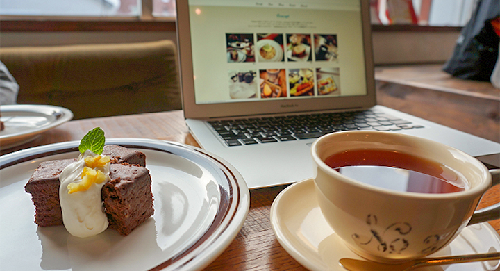

Cafe Debut
baser CMS カフェサイト用テーマ
baser CMS テーマコンテスト2012 飲食店系テーマ賞受賞
(受賞結果はこちら)
今すぐ、始められるカフェサイトテーマ！
baser CMS は「コーポレートサイトにちょうどいい」をキャッチコピーにしたcakePHPベースの国産CMS。 Cafe Debutは、 baseCMSのテーマコンテスト２０１２に応募するために、チームこもりこましゃで作成しました。
baserCMSのインストールと、Cafe Debutテーマの初期設定を行ったら、あとはあなたのスマートフォンのInstagramで写真を撮っていくだけ。
Instagramのおしゃれ写真で、すぐに素敵なカフェサイトが出来上がっちゃうフォトログ風baserCMSテーマです。
| コモモ | 企画・デザイン・baseCMSテーマのベース組み担当 |
|---|---|
| モリコ | HTML / CSSコーディング担当 |
| ひろましゃ | プラグイン制作、テーマ実装の難しいところとか担当 |
プラグインでInstagramと連携
プラグインでInstagramと連携して、トップページにInstagramで撮影した写真がすぐに反映されます。
レスポンジブデザインでスマートフォン、タブレット表示も快適
様々なデバイスの表示対応に、レスポンシブデザインを採用しました。Instagramでお店のメニューを撮影してすぐにスマートフォンで確認できるのも嬉しい♪
Webフォントだから、飾り文字やアイコンもキレイ
サイトのタイトルやナビゲーション、主要な見出しはGoogle Web Font、アイコンはウェブフォント（Fontello）を採用しています。拡大縮小されるスマートフォンやタブレットでも解像度を気 にする事なくキレイな文字とアイコン表示を実現できました。